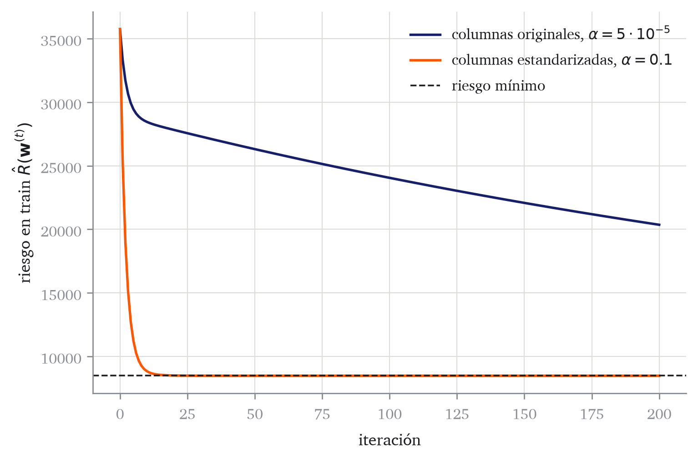

![]()
Código
import numpy as np
import pandas as pd
from matplotlib import pyplot as plt
anuncios = pd.read_csv("../datos/airbnb_madrid.csv")
print("Anuncios y columnas:", anuncios.shape)Anuncios y columnas: (15000, 17)Valores ausentes, variables categóricas, escalado y pipelines
Abre el cuaderno de esta página en Google Colab. Lo primero, Archivo → Guardar una copia en Drive.
El capítulo anterior dejó sin examinar un supuesto: trabajamos con una tabla de números completa, en la que lo único que se estimaba a partir de los datos eran los coeficientes. Las tablas reales suelen contener valores ausentes, variables categóricas y variables numéricas en escalas muy distintas, y deben transformarse antes del ajuste. Este conjunto de transformaciones se denomina preprocesamiento, y sus parámetros también se estiman a partir de los datos.
El objetivo de este capítulo es construir la matriz de diseño a partir de una tabla de datos sin utilizar las observaciones con las que después se evalúa el modelo. Para ello:
Usaremos los anuncios de Airbnb en Madrid guardados en datos/airbnb_madrid.csv. Cada fila es un anuncio, y price es el precio por noche de la vivienda anunciada, en euros. Queremos predecir el precio de anuncios nuevos a partir de cuatro columnas:
| Columna | Qué recoge |
|---|---|
accommodates |
número de plazas de la vivienda anunciada |
bedrooms |
número de dormitorios de esa vivienda |
number_of_reviews |
número de reseñas que ha recibido el anuncio |
room_type |
tipo de alojamiento, con cuatro etiquetas |
Las tres primeras recogen cantidades y la cuarta, etiquetas.
Definición 5.1 (Variables numéricas y categóricas) Una variable numérica representa una magnitud: sumar o restar sus valores tiene significado. Una variable categórica toma sus valores en un conjunto finito de etiquetas. Es ordinal si las etiquetas tienen un orden natural, como un nivel de estudios, y nominal si no lo tienen.
Un código postal, aunque se escriba con números, es una variable categórica.
Siguiendo el primer paso del protocolo de Sección 4.7, separamos test antes de explorar la tabla. Repartimos los anuncios al azar, como en el capítulo 4, y reservamos el 20 % para test.
import numpy as np
import pandas as pd
from matplotlib import pyplot as plt
anuncios = pd.read_csv("../datos/airbnb_madrid.csv")
print("Anuncios y columnas:", anuncios.shape)Anuncios y columnas: (15000, 17)from sklearn.model_selection import train_test_split
NUMERICAS = ["accommodates", "bedrooms", "number_of_reviews"]
CATEGORICAS = ["room_type"]
train, test = train_test_split(anuncios, test_size=0.2, random_state=42)
y_train = train["price"].to_numpy()
print("Anuncios de train y test:", len(train), len(test))Anuncios de train y test: 12000 3000Con una tabla de pandas, train_test_split devuelve dos tablas con las mismas columnas. Desde aquí hasta la evaluación final, todo se calcula solo con train.
print(train[NUMERICAS + CATEGORICAS].head(4).to_string(index=False))
print("\nValores ausentes en train:")
print(train[NUMERICAS + CATEGORICAS].isna().sum().to_string())
print("\nMínimo y máximo de las numéricas en train:")
print(train[NUMERICAS].agg(["min", "max"]).to_string()) accommodates bedrooms number_of_reviews room_type
3 2.0 5 Entire home/apt
8 3.0 45 Entire home/apt
4 NaN 2 Private room
2 1.0 161 Private room
Valores ausentes en train:
accommodates 0
bedrooms 2710
number_of_reviews 0
room_type 0
Mínimo y máximo de las numéricas en train:
accommodates bedrooms number_of_reviews
min 1 0.0 0
max 16 50.0 1433Cada uno de los tres problemas impide o dificulta una operación del capítulo 3:
| Problema | Dónde aparece | Qué impide |
|---|---|---|
| valores ausentes | bedrooms falta en 2710 de los 12000 anuncios |
calcular las predicciones y el ajuste |
| variable categórica | room_type toma etiquetas como Private room |
multiplicar la columna por un coeficiente |
| escalas distintas | number_of_reviews llega a 1433 y accommodates, a 16 |
nada en mínimos cuadrados; dificulta el descenso de gradiente |
La sección siguiente trata los tres problemas con el mismo esquema: problema, consecuencia para el ajuste del capítulo 3, tratamientos posibles, implementación en scikit-learn y aplicación a los datos.
Problema. Algunas entradas de la tabla carecen de dato.
Definición 5.2 (Valor ausente) Un valor ausente es una entrada de la tabla cuyo dato no conocemos. En las columnas numéricas de pandas aparece como NaN. No equivale a cero: un número de dormitorios desconocido no es un número de dormitorios igual a cero.
En train, bedrooms tiene 2710 valores ausentes, el 22.6 % de los anuncios.
Consecuencia. Con un NaN en la fila \(i\) no se puede calcular su predicción \(\mathbf{x}_i^{\mathsf{T}}\boldsymbol{w}\) ni el producto \(\mathbf{X}^{\mathsf{T}}\mathbf{X}\) de las ecuaciones normales, porque cualquier operación con NaN da NaN. LinearRegression se detiene con un error si recibe valores ausentes: mientras quede alguno, el ajuste no se puede calcular.
Tratamientos. Evidentemente, es imposible recuperar el valor desconocido (que sería lo ideal).
| Tratamiento | Ventaja | Precaución |
|---|---|---|
| eliminar las filas incompletas | deja una tabla completa | pierde observaciones y puede cambiar la población representada |
| eliminar la columna | evita una variable con muchos valores ausentes | pierde también sus valores observados |
| imputar con la media | conserva filas y columnas | los valores extremos desplazan la media |
| imputar con la mediana | conserva filas y columnas; resiste los valores extremos | asigna el mismo valor a todos los valores ausentes |
Imputar es sustituir cada valor ausente por un valor calculado con los valores observados de la misma columna.
completos = train.dropna(subset=NUMERICAS)
print(f"Anuncios de train sin valores ausentes: {len(completos)} "
f"de {len(train)}")
print("\nProporción sin bedrooms, por tipo de alojamiento:")
print(train["bedrooms"].isna().groupby(train["room_type"]).mean()
.round(2).to_string())
privadas = (train["room_type"] == "Private room").mean()
privadas_completos = (completos["room_type"] == "Private room").mean()
print(f"\nPeso de las habitaciones privadas: {privadas:.3f} en train, "
f"{privadas_completos:.3f} sin las filas incompletas")Anuncios de train sin valores ausentes: 9290 de 12000
Proporción sin bedrooms, por tipo de alojamiento:
room_type
Entire home/apt 0.09
Hotel room 0.35
Private room 0.60
Shared room 0.35
Peso de las habitaciones privadas: 0.263 en train, 0.137 sin las filas incompletasEliminar las filas incompletas dejaría 9290 de los 12000 anuncios de train. Como falta bedrooms en el 60 % de las habitaciones privadas y en el 9 % de las viviendas completas, las privadas pasarían del 26 % al 14 % de la muestra. Imputamos con la mediana, que no se ve afectada por valores extremos como el de un anuncio con 50 dormitorios.
Al imputar se pierde la distinción entre un valor observado y un valor imputado. Una variable indicadora de valor ausente, que vale uno si el dato faltaba y cero si no, la conserva; su utilidad predictiva se comprueba con validación cruzada. En este capítulo no la usamos, pero es un recurso a tener en cuenta.
Implementación en scikit-learn. Imputar requiere dos operaciones: estimar la mediana con unas observaciones y usarla después para imputar cualquier tabla. scikit-learn implementa así todos los tratamientos de este capítulo.
Definición 5.3 (Transformador) Un transformador de scikit-learn es un objeto con dos métodos. fit(X) calcula con la tabla X los valores que necesita el tratamiento y los guarda en el objeto. transform(X) aplica el tratamiento a la tabla X con los valores guardados, sin recalcularlos. fit_transform(X) hace las dos cosas seguidas sobre la misma tabla.
El transformador que imputa es SimpleImputer. Su argumento strategy elige el valor imputado: "median" la mediana y "mean" la media. Con add_indicator=True añade, además, una indicadora por cada columna que tenga valores ausentes al hacer fit. Sobre una columna de cuatro valores:
from sklearn.impute import SimpleImputer
ejemplo_train = pd.DataFrame({"x": [2.0, np.nan, 4.0, 10.0]})
ejemplo_nuevo = pd.DataFrame({"x": [np.nan, 20.0]})
imputador = SimpleImputer(strategy="median")
imputador.fit(ejemplo_train[["x"]])
print("Mediana guardada:", imputador.statistics_)
print("Train:", imputador.transform(ejemplo_train[["x"]]).ravel())
print("Nuevos:", imputador.transform(ejemplo_nuevo[["x"]]).ravel())Mediana guardada: [4.]
Train: [ 2. 4. 4. 10.]
Nuevos: [ 4. 20.]fit calcula la mediana de los valores observados, \((2,4,10)\), que es \(4\), y la guarda en statistics_; el guion bajo final indica que se ha estimado a partir de los datos. transform imputa ese \(4\) en los dos valores ausentes, el de train y el de los datos nuevos; el \(20\) nuevo no interviene. Los dobles corchetes mantienen una tabla de una columna, que es lo que espera scikit-learn.
Aplicación a los datos.
imputador = SimpleImputer(strategy="median")
numericas_train = imputador.fit_transform(train[NUMERICAS])
print(pd.Series(imputador.statistics_, index=NUMERICAS).to_string())
print("¿Quedan valores ausentes?", np.isnan(numericas_train).any())accommodates 3.0
bedrooms 1.0
number_of_reviews 24.0
¿Quedan valores ausentes? FalseLos 2710 valores ausentes de bedrooms se imputan con 1 dormitorio, su mediana en train. Las otras dos columnas también guardan su mediana, por si a un anuncio nuevo le faltara el dato.
Ejercicio 5.1 Una variable numérica tiene estos valores en train: \((2,4,\mathrm{NaN},10,\mathrm{NaN})\). En validación toma los valores \((\mathrm{NaN},8)\). Vamos a imputar por la mediana de train y añadir una indicadora que valga uno cuando el dato original falte.
NaN al calcularla?fit_transform o a transform sobre el imputador ya ajustado? Explica la diferencia.Problema. room_type es una variable categórica nominal. Toma cuatro etiquetas, Entire home/apt, Private room, Shared room y Hotel room, sin ningún orden entre ellas.
Consecuencia. El modelo lineal multiplica cada columna por un coeficiente, y una etiqueta no se puede multiplicar. Sustituir las etiquetas por \(1,2,3,4\) permitiría hacer la cuenta, pero impondría un orden y saltos iguales: con un solo coeficiente, pasar del tipo 1 al 2 cambiaría la predicción lo mismo que pasar del 2 al 3, y esa igualdad no está justificada.
Tratamientos.
| Tratamiento | Cuándo tiene sentido |
|---|---|
| asignar a cada etiqueta un número que respete su orden | variables ordinales, si aceptamos saltos iguales entre etiquetas consecutivas |
| crear una columna indicadora por categoría | variables nominales, como room_type |
Definición 5.4 (Codificación indicadora) La codificación indicadora, o one-hot encoding, sustituye una variable categórica de \(C\) categorías por \(C\) columnas. La columna de la categoría \(k\) vale uno en las observaciones de esa categoría y cero en las demás, de modo que cada fila tiene exactamente un uno.
Con tres tipos de alojamiento, por ejemplo, las indicadoras serían:
| Tipo | Completo | Hotel | Privado |
|---|---|---|---|
| Completo | 1 | 0 | 0 |
| Hotel | 0 | 1 | 0 |
| Privado | 0 | 0 | 1 |
Cada categoría recibe así su propio coeficiente. Sin embargo, la codificación completa produce una dependencia lineal con la columna de unos del intercepto.
Proposición 5.1 (Redundancia entre intercepto e indicadoras) Si la matriz de diseño contiene la columna de unos y las \(C\) indicadoras de una variable categórica, sus columnas son linealmente dependientes.
Demostración. En cada fila hay exactamente un uno entre las \(C\) indicadoras, así que su suma es la columna de unos. Sea \(\mathbf d\) el vector con \(-1\) en la coordenada del intercepto, \(1\) en las de las \(C\) indicadoras y \(0\) en las demás. Entonces \(\mathbf{X}\mathbf d=\mathbf{0}\) con \(\mathbf d\neq\mathbf{0}\), que es una dependencia lineal entre las columnas de \(\mathbf{X}\).
Por Teorema 3.2, el ajuste existe pero no es único: sumar una constante al intercepto y restarla a los \(C\) coeficientes de las indicadoras deja todas las predicciones iguales. Para evitarlo se elimina una de las indicadoras.
Definición 5.5 (Categoría de referencia) La categoría de referencia es la categoría cuya indicadora se elimina. Sus observaciones tienen ceros en todas las indicadoras que quedan. Con las demás variables predictoras fijas, el coeficiente de cada indicadora es la diferencia de predicción entre su categoría y la de referencia.
Si la referencia es Completo, el modelo ya ajustado
\[ \hat{y}=100+30I_{\mathrm{Hotel}}-20I_{\mathrm{Privado}} \]
predice \(100\) euros para Completo, \(130\) para Hotel y \(80\) para Privado. Con otras variables predictoras en el modelo, el intercepto sería la predicción de la referencia cuando esas variables valen cero.
Implementación en scikit-learn. El transformador es OneHotEncoder. fit estima la lista de categorías de cada columna, que guarda en categories_, y transform crea las indicadoras siempre en ese orden. Usaremos tres argumentos:
drop="first" elimina la indicadora de la primera categoría aprendida, que pasa a ser la referencia. Con etiquetas de texto, la primera es la primera en orden alfabético.sparse_output=False devuelve una matriz de NumPy corriente.handle_unknown="ignore" permite transformar una categoría que no apareció en fit: la codifica con ceros en todas las indicadoras, igual que la referencia. Esta convención permite predecir, pero no implica que ambas categorías tengan el mismo efecto sobre la respuesta.from sklearn.preprocessing import OneHotEncoder
codificador = OneHotEncoder(
drop="first", handle_unknown="ignore", sparse_output=False)
categorias_train = codificador.fit_transform(train[CATEGORICAS])
print("Categorías aprendidas:", codificador.categories_[0])
print("Columnas creadas:", codificador.get_feature_names_out())
print("Primeras filas:\n", categorias_train[:3])Categorías aprendidas: ['Entire home/apt' 'Hotel room' 'Private room' 'Shared room']
Columnas creadas: ['room_type_Hotel room' 'room_type_Private room' 'room_type_Shared room']
Primeras filas:
[[0. 0. 0.]
[0. 0. 0.]
[0. 1. 0.]]Aplicación a los datos. La referencia es Entire home/apt, la primera en orden alfabético, y quedan tres indicadoras.
completo = OneHotEncoder(sparse_output=False).fit(train[CATEGORICAS])
unos = np.ones((len(train), 1))
X_completa = np.hstack([unos, completo.transform(train[CATEGORICAS])])
X_reducida = np.hstack([unos, categorias_train])
for nombre, X in [("con las cuatro indicadoras", X_completa),
("sin la de referencia", X_reducida)]:
print(f"{nombre}: {X.shape[1]} columnas, "
f"rango {np.linalg.matrix_rank(X)}")con las cuatro indicadoras: 5 columnas, rango 4
sin la de referencia: 4 columnas, rango 4Con la columna de unos y las cuatro indicadoras, la matriz de train tiene 5 columnas y rango 4, como afirma Proposición 5.1. Sin la indicadora de referencia tiene 4 columnas y rango 4, y el ajuste vuelve a ser único.
Ejercicio 5.2 Una variable categórica toma los valores \((A,B,A,C)\) en train. Usamos \(A\) como referencia y dos indicadoras, \(d_B\) y \(d_C\), que valen uno cuando la categoría es \(B\) o \(C\), respectivamente. Un modelo ya ajustado predice \[ \hat{f}= 50+20d_B-10d_C. \]
OneHotEncoder(drop="first", handle_unknown="ignore"). Llega una observación de una categoría nueva \(D\). Se codifica con ceros en las dos indicadoras: calcula la predicción y explica por qué eso no demuestra que \(D\) se comporte como \(A\).Problema. Tras la imputación, la desviación típica de number_of_reviews en train es de 114.68 reseñas, la de accommodates de 1.92 plazas y la de bedrooms de 0.98 dormitorios. La primera es más de cien veces mayor que la última.
Consecuencia. Depende del método con el que se calcule el ajuste.
LinearRegression: ninguna. Multiplicar una columna por una constante se compensa dividiendo su coeficiente por esa constante, de modo que el conjunto de predicciones alcanzables no cambia. Lo demuestra, para el tratamiento que usaremos, Proposición 5.2.Tratamientos.
| Tratamiento | Qué hace | Cuándo |
|---|---|---|
| conservar las unidades | no transforma la columna | ajuste por mínimos cuadrados resuelto directamente |
| estandarizar | resta la media y divide por la desviación típica | ajuste por descenso de gradiente |
La estandarización de una columna de train calcula
\[ \bar x=\frac{1}{n_{\mathrm{train}}}\sum_{i\in\mathcal{D}_{\mathrm{train}}}x_i, \qquad s_x=\sqrt{\frac{1}{n_{\mathrm{train}}}\sum_{i\in\mathcal{D}_{\mathrm{train}}}(x_i-\bar x)^2}, \qquad z=\frac{x-\bar x}{s_x}. \]
Si \(s_x>0\), la columna \(z\) de train tiene media cero, porque los \(x_i-\bar x\) suman cero, y desviación típica uno, porque la media de sus cuadrados es \(s_x^2\). El divisor es \(n_{\mathrm{train}}\) y no \(n_{\mathrm{train}}-1\) porque buscamos una transformación, no un estimador insesgado de la varianza.
Proposición 5.2 (Estandarizar no cambia el ajuste por mínimos cuadrados) Sea \(x\) una variable predictora con \(s_x>0\) y sea \(z=(x-\bar x)/s_x\). En un modelo con intercepto, las rectas \(a+bz\), con \(a,b\in\mathbb{R}\), son exactamente las rectas \(w_0+w_1x\), con \(w_0,w_1\in\mathbb{R}\). Por tanto, el ajuste por mínimos cuadrados con \(z\) produce las mismas predicciones que con \(x\).
Demostración. Sustituyendo \(z\),
\[ a+bz=\Bigl(a-\frac{b\,\bar x}{s_x}\Bigr)+\frac{b}{s_x}\,x, \]
que es una recta en \(x\). Recíprocamente, la recta \(w_0+w_1x\) se obtiene con \(b=w_1s_x\) y \(a=w_0+w_1\bar x\). Las dos familias producen los mismos vectores de predicciones sobre train y tienen, por tanto, el mismo riesgo mínimo. Un ajuste con \(z\) es una recta en \(x\) que alcanza ese mínimo, es decir, un ajuste con \(x\), y por Teorema 3.2 todos los ajustes con \(x\) dan las mismas predicciones.
El argumento se repite columna a columna, siempre que el modelo tenga intercepto. Los coeficientes, en cambio, sí cambian: el de \(z\) es \(b=w_1s_x\), el cambio de la predicción cuando \(x\) aumenta una desviación típica. Para comparar los coeficientes de dos ajustes hay que expresarlos en la misma escala.
Implementación en scikit-learn. El transformador es StandardScaler. fit guarda la media y la desviación típica de cada columna en mean_ y scale_, y transform calcula \((x-\bar x)/s_x\) con esos valores, también para observaciones nuevas. Una columna constante solo se centra, para no dividir por cero.
from sklearn.preprocessing import StandardScaler
escalador = StandardScaler()
numericas_escaladas = escalador.fit_transform(numericas_train)
print("Medias guardadas:", escalador.mean_.round(2))
print("Desviaciones guardadas:", escalador.scale_.round(2))
medias = numericas_escaladas.mean(axis=0)
print(f"Mayor media después, en valor absoluto: {np.abs(medias).max():.1e}")
print("Desviaciones después:", numericas_escaladas.std(axis=0).round(6))Medias guardadas: [ 3.3 1.46 70.24]
Desviaciones guardadas: [ 1.92 0.98 114.68]
Mayor media después, en valor absoluto: 5.0e-17
Desviaciones después: [1. 1. 1.]Aplicación a los datos. Las columnas estandarizadas de train tienen desviación típica uno y media cero, salvo errores de redondeo del orden de \(10^{-17}\). Para medir el efecto sobre el descenso de gradiente, ajustamos la regresión de price sobre las tres columnas imputadas, con la columna de unos, mediante el descenso de gradiente del capítulo 3: una vez con las columnas originales y otra con las estandarizadas.
import torch
y_tensor = torch.tensor(y_train)
def con_unos(columnas):
columnas = torch.tensor(columnas)
return torch.cat([torch.ones(len(columnas), 1, dtype=torch.float64),
columnas], dim=1)
def riesgos_descenso(X, lr, n_iter=200):
w = torch.zeros(X.shape[1], dtype=torch.float64)
riesgos = [((y_tensor - X @ w) ** 2).mean().item()]
for _ in range(n_iter):
gradiente = -2 * (X.T @ (y_tensor - X @ w)) / len(y_tensor)
w = w - lr * gradiente
riesgos.append(((y_tensor - X @ w) ** 2).mean().item())
return riesgos
X_original = con_unos(numericas_train)
X_estandar = con_unos(numericas_escaladas)
w_minimo = torch.linalg.lstsq(X_original, y_tensor).solution
riesgo_minimo = ((y_tensor - X_original @ w_minimo) ** 2).mean().item()
riesgos_original = riesgos_descenso(X_original, lr=5e-5)
riesgos_estandar = riesgos_descenso(X_estandar, lr=0.1)
riesgos_divergen = riesgos_descenso(X_original, lr=6e-5)
print(f"Riesgo mínimo: {riesgo_minimo:.1f}")
print(f"Tras 200 iteraciones, originales con lr=5e-5: "
f"{riesgos_original[-1]:.1f}")
print(f"Tras 200 iteraciones, originales con lr=6e-5: "
f"{riesgos_divergen[-1]:.3g}")
print(f"Tras 50 iteraciones, estandarizadas con lr=0.1: "
f"{riesgos_estandar[50]:.1f}")Riesgo mínimo: 8476.3
Tras 200 iteraciones, originales con lr=5e-5: 20355.0
Tras 200 iteraciones, originales con lr=6e-5: 1.58e+31
Tras 50 iteraciones, estandarizadas con lr=0.1: 8476.4fig, ax = plt.subplots(figsize=(6, 4))
ax.plot(riesgos_original, color="#151f6c", # AZUL de style.py
label=r"columnas originales, $\alpha=5\cdot 10^{-5}$")
ax.plot(riesgos_estandar, color="#ff5700", # NARANJA de style.py
label=r"columnas estandarizadas, $\alpha=0.1$")
ax.axhline(riesgo_minimo, color="#1b1d21", linestyle="--", lw=1,
label="riesgo mínimo")
ax.set(xlabel="iteración",
ylabel=r"riesgo en train $\hat R(\mathbf{w}^{(t)})$")
ax.legend()
plt.tight_layout()
Con las columnas originales, el descenso diverge con \(\alpha=6\cdot10^{-5}\). Con \(\alpha=5\cdot10^{-5}\) el riesgo disminuye, pero tras 200 iteraciones vale 20355.0, más del doble del mínimo, 8476.3. Con las columnas estandarizadas, \(\alpha=0.1\) alcanza 8476.4 en 50 iteraciones.
Ejercicio 5.3 Una variable numérica vale \((2,2,6,6)\) en train y \((0,4,10)\) en test. Estandarizamos restando la media de train y dividiendo por su desviación típica, calculada con divisor \(n_{\mathrm{train}}\).
Los tres tratamientos estiman parámetros a partir de train: las medianas de las columnas numéricas, la lista de categorías de room_type y las medias y desviaciones típicas de las columnas imputadas. El modelo final depende de esos parámetros igual que de los coeficientes. Para predecir el precio de un anuncio nuevo sin dato de bedrooms, aplica la mediana guardada, después la media y la desviación típica guardadas y, por último, los coeficientes.
Si esos parámetros se estimaran con la tabla completa, las observaciones de test intervendrían en el modelo con el que después se evalúan, aunque no se hubiera usado su respuesta.
Definición 5.6 (Fuga de información) Hay fuga de información, o data leakage, cuando el modelo que se evalúa depende de información que no estaría disponible al predecir. Ocurre, por ejemplo, si su preprocesamiento o sus coeficientes se estiman con las observaciones que después lo evalúan.
Corolario 5.1 (El test debe ser ajeno a todo el procedimiento) Para aplicar Teorema 4.1, tanto los coeficientes como el preprocesamiento y las decisiones del procedimiento deben fijarse sin usar \(\mathcal{D}_{\mathrm{test}}\). Si hay fuga desde \(\mathcal{D}_{\mathrm{test}}\), esa garantía deja de estar justificada.
Demostración. La demostración de Teorema 4.1 promedia las pérdidas de una función fija, elegida sin mirar \(\mathcal{D}_{\mathrm{test}}\), sobre observaciones independientes de \(P^\star\). El preprocesamiento forma parte de esa función: la mediana imputada interviene en la predicción. Si la mediana se ha calculado con \(\mathcal{D}_{\mathrm{test}}\), la función depende de las observaciones en las que se evalúa, y la esperanza de cada pérdida ya no es el riesgo de una función fija.
El corolario no afirma que la fuga altere siempre el error medido, sino que deja de estar garantizado que su estimación sea insesgada. La fuga se evita con la regla siguiente:
| Momento | Operación |
|---|---|
| ajuste | fit o fit_transform, solo con las observaciones de ajuste |
| evaluación o predicción | transform con los valores guardados; después, predict |
Una transformación que no estima parámetros a partir de los datos, como convertir metros en centímetros, no puede producir fuga: la fuga depende del origen de los valores estimados, no del tipo de operación.
Preprocesar antes de repartir. Llamar a fit_transform sobre la tabla completa y repartir después, o llamar a fit_transform sobre test, estima el preprocesamiento con test. El código se ejecuta sin errores ni avisos, de modo que el problema no se detecta en la salida. Sobre test solo se llama a transform y a predict.
En los casos anteriores, la información de test entra en el modelo a través del preprocesamiento. La Definición 5.6 incluye otro caso, que no depende de cómo se estime el preprocesamiento: una variable predictora puede contener información que todavía no se conoce en el momento en que hay que hacer la predicción.
Definición 5.7 (Fuga temporal) Hay fuga temporal cuando, para predecir la respuesta de una observación, el modelo utiliza información que solo se conoce después del momento en que debe hacerse esa predicción.
Para detectarla hay que fijar primero en qué momento se hará cada predicción y comprobar después, columna a columna, si su valor ya se conoce en ese momento. La respuesta depende del uso que se vaya a dar al modelo, no solo de la columna. En nuestra tabla, number_of_reviews cuenta las reseñas que cada anuncio había acumulado el 20 de junio de 2026, fecha en que se descargaron los datos.
Ningún tratamiento de este capítulo corrige la fuga temporal, porque los valores de la columna son correctos: lo que no se cumple es que se conozcan al predecir. Hay que eliminar la columna o sustituirla por otra calculada solo con información anterior a ese momento.
El mismo criterio se aplica al reparto de las observaciones cuando el objetivo es predecir un periodo futuro. Si los datos cubren de 2022 a 2025 y queremos predecir 2026, un reparto al azar mezcla los cuatro años en train y en test: el modelo que se evalúa sobre observaciones de 2022 se ha ajustado también con observaciones de 2025. Su riesgo en test estima el error de predecir fechas intercaladas entre las de ajuste, no el de predecir un año que todavía no ha ocurrido. El reparto debe reproducir el uso del modelo: se ajusta con las observaciones anteriores a una fecha y se evalúa con las posteriores. En la validación cruzada, cada vuelta valida igualmente con un periodo posterior a los que ajusta; TimeSeriesSplit, de scikit-learn, genera vueltas de ese tipo a partir de filas ordenadas por fecha.
Nuestro objetivo es predecir el precio de anuncios que no están en la muestra pero que ya estaban publicados en la fecha de la descarga. Por eso podemos usar number_of_reviews y el reparto al azar del capítulo 4.
Aplicar los tres tratamientos por separado exige conservar el imputador, el escalador y el codificador, llamarlos en el mismo orden al ajustar y al predecir, y pasar a cada uno sus columnas. Cada una de esas llamadas puede introducir una fuga si se hace sobre la tabla equivocada. scikit-learn reúne todos los pasos en un único objeto.
Definición 5.8 (Pipeline) Un Pipeline es una secuencia de pasos. Su fit llama a fit_transform en cada transformador, en orden, y pasa la salida de cada uno al siguiente; si el último paso es una regresión, ajusta sus coeficientes. Su predict aplica las transformaciones ya estimadas, sin volver a ajustarlas, y calcula la predicción.
El preprocesamiento de las columnas numéricas es un pipeline de dos pasos:
from sklearn.pipeline import Pipeline
preparacion_numerica = Pipeline([
("imputar", SimpleImputer(strategy="median")),
("escalar", StandardScaler()),
])
numericas_preparadas = preparacion_numerica.fit_transform(train[NUMERICAS])
print(numericas_preparadas[:3].round(2))[[-0.16 0.55 -0.57]
[ 2.45 1.57 -0.22]
[ 0.36 -0.47 -0.6 ]]Cada par (nombre, objeto) es un paso. Los nombres los elegimos nosotros; los objetos determinan la operación. La lista fija el orden: el escalador recibe la salida del imputador, de modo que la media y la desviación típica que guarda son las de la columna completa que recibe la regresión.
La columna categórica requiere un tratamiento distinto. Hay que aplicar un preprocesamiento a las columnas numéricas y otro a las categóricas, y concatenar sus resultados.
Definición 5.9 (ColumnTransformer) Un ColumnTransformer aplica un tratamiento a cada grupo de columnas y concatena sus resultados. Cada tratamiento se indica con un triplete (nombre, tratamiento, columnas). Las columnas que no aparecen en ningún triplete se descartan.
from sklearn.compose import ColumnTransformer
preparacion = ColumnTransformer([
("num", preparacion_numerica, NUMERICAS),
("cat", OneHotEncoder(drop="first", handle_unknown="ignore",
sparse_output=False), CATEGORICAS),
])
matriz_train = preparacion.fit_transform(train)
print("Forma:", matriz_train.shape)
print("Columnas:", preparacion.get_feature_names_out())Forma: (12000, 6)
Columnas: ['num__accommodates' 'num__bedrooms' 'num__number_of_reviews'
'cat__room_type_Hotel room' 'cat__room_type_Private room'
'cat__room_type_Shared room']La matriz tiene seis columnas: las tres numéricas, imputadas y estandarizadas, y las tres indicadoras de room_type. price y el resto de columnas de la tabla se descartan. Tampoco hay columna de unos, porque LinearRegression() estima su propio intercepto.
El procedimiento completo añade la regresión como último paso:
from sklearn.linear_model import LinearRegression
procedimiento = Pipeline([
("preparar", preparacion),
("regresion", LinearRegression()),
])
modelo = procedimiento.fit(train, y_train)
print("Predicciones de tres anuncios de train:",
modelo.predict(train.iloc[:3]).round(2))Predicciones de tres anuncios de train: [157.44 308.72 143.8 ]fit(train, y_train) estima con train todos los parámetros de la cadena: medianas, categorías, medias, desviaciones típicas y coeficientes. predict recibe la tabla sin preprocesar y aplica internamente los pasos con los valores guardados. El pipeline garantiza que todos sus pasos se ajusten con las mismas filas, pero no decide cuáles: si se llama a fit con test, todos los pasos se ajustan con test.
En la validación cruzada del capítulo 4, cada vuelta ajustaba los coeficientes sin el bloque de validación. Ahora cada vuelta debe estimar también su propio preprocesamiento. Si se preprocesa todo train una sola vez y la validación cruzada se aplica después sobre la matriz resultante, el bloque de validación interviene en las medianas y las escalas con las que se transforma: es una fuga dentro de la validación cruzada.
Por ejemplo, si en una vuelta de validación los valores de ajuste de una columna son \((1,3,\mathrm{NaN})\) y los de validación \((100,\mathrm{NaN})\), la mediana correcta es \(2\). Calculada antes de separar el bloque, con \((1,3,100)\), sería \(3\), y el valor ausente de validación se imputaría con un valor que depende del propio bloque.
| Dentro de cada vuelta | Observaciones permitidas |
|---|---|
| estimar medianas, categorías, medias y desviaciones | los bloques de ajuste |
| ajustar los coeficientes | los mismos bloques, ya preprocesados |
| transformar y evaluar | el bloque de validación, sin ningún fit |
Basta con ajustar el pipeline completo dentro de cada vuelta. Para ilustrar esto, compararemos dos procedimientos, fijados antes de calcular sus errores:
room_type.La función siguiente construye un pipeline nuevo en cada llamada, de modo que ninguna vuelta reutiliza parámetros estimados en otra. La lista categoricas está vacía en A y contiene room_type en B; ColumnTransformer omite un tratamiento si su lista de columnas está vacía.
def crear_procedimiento(categoricas):
numerico = Pipeline([
("imputar", SimpleImputer(strategy="median")),
("escalar", StandardScaler()),
])
preparar = ColumnTransformer([
("num", numerico, NUMERICAS),
("cat", OneHotEncoder(drop="first", handle_unknown="ignore",
sparse_output=False), categoricas),
])
return Pipeline([
("preparar", preparar),
("regresion", LinearRegression()),
])Los bloques los fija KFold, como en el capítulo 4. Guardamos los cinco pares de índices para usar exactamente los mismos en A y B.
from sklearn.model_selection import KFold
particion = KFold(n_splits=5, shuffle=True, random_state=42)
bloques = list(particion.split(train))
def riesgos_cv(categoricas):
riesgos = []
for i_ajuste, i_val in bloques:
modelo = crear_procedimiento(categoricas)
modelo.fit(train.iloc[i_ajuste], y_train[i_ajuste])
prediccion = modelo.predict(train.iloc[i_val])
riesgos.append(np.mean((y_train[i_val] - prediccion) ** 2))
return np.array(riesgos)
riesgos_a = riesgos_cv([])
riesgos_b = riesgos_cv(["room_type"])
print(pd.DataFrame({"A": riesgos_a, "B": riesgos_b}).round(1))
print("Medias:", riesgos_a.mean().round(1), riesgos_b.mean().round(1)) A B
0 8852.3 8771.8
1 8744.3 8700.2
2 9046.6 8866.1
3 8512.9 8396.0
4 7747.0 7509.5
Medias: 8580.6 8448.7Respecto al bucle del capítulo 4 solo cambia el objeto que se ajusta en cada vuelta, que ahora es el pipeline completo. Las medias de CV son 8580.6 para A y 8448.7 para B, en euros al cuadrado. Para elegir aplicamos la regla emparejada de un error típico de Definición 4.6: A es el procedimiento más sencillo, porque usa menos columnas.
diferencias = riesgos_a - riesgos_b
desventaja_a = diferencias.mean()
ee_diferencia = diferencias.std(ddof=1) / np.sqrt(len(diferencias))
elegir_b = desventaja_a > ee_diferencia
categoricas_elegidas = ["room_type"] if elegir_b else []
print(f"MSE de A menos MSE de B: {desventaja_a:.1f}")
print(f"Error típico aproximado: {ee_diferencia:.1f}")
print("Procedimiento elegido:", "B" if elegir_b else "A")MSE de A menos MSE de B: 131.9
Error típico aproximado: 34.7
Procedimiento elegido: BLa desventaja de A es 131.9, casi cuatro veces el error típico aproximado, 34.7. La regla elige B, que incluye el tipo de alojamiento. Como en el capítulo 4, ese error típico es aproximado, porque las cinco vueltas comparten observaciones.
Ejercicio 5.4 Reservamos cuatro observaciones para test. Las doce restantes forman train y se reparten en tres bloques de CV. Una de las predictoras tiene estos valores:
| Bloque | Valores de la predictora |
|---|---|
| \(\mathcal{F}_{1}\) | \(1,3,\mathrm{NaN},\mathrm{NaN}\) |
| \(\mathcal{F}_{2}\) | \(5,7,9,\mathrm{NaN}\) |
| \(\mathcal{F}_{3}\) | \(11,13,15,\mathrm{NaN}\) |
El procedimiento imputa por la mediana y después ajusta una regresión lineal.
Una vez elegido el procedimiento, se ajusta con todo train, lo que fija las medianas, las categorías, las medias, las desviaciones típicas y los coeficientes definitivos. Solo entonces se evalúa en test. El modelo nulo predice la media de price en train.
modelo_final = crear_procedimiento(categoricas_elegidas).fit(train, y_train)
y_test = test["price"].to_numpy()
perdidas = (y_test - modelo_final.predict(test)) ** 2
perdidas_nulo = (y_test - y_train.mean()) ** 2
for nombre, p in [("Nulo", perdidas_nulo), ("Elegido", perdidas)]:
ee = p.std(ddof=1) / np.sqrt(len(p))
print(f"{nombre:8s} MSE = {p.mean():.1f} ± {ee:.1f}; "
f"RMSE = {np.sqrt(p.mean()):.2f} euros")Nulo MSE = 13762.7 ± 862.5; RMSE = 117.31 euros
Elegido MSE = 8817.4 ± 686.3; RMSE = 93.90 eurosEl RMSE de test es 93.90 euros para el procedimiento elegido y 117.31 euros para el modelo nulo. El MSE de test del elegido es \(8817.4\pm686.3\), con el error típico del capítulo 4. Este resultado no se usa para volver a elegir variables ni para modificar el preprocesamiento.
El protocolo del capítulo 4 conserva sus cinco pasos: separar test, fijar la referencia nula, elegir mediante validación cruzada en train, reajustar con todo train y evaluar una vez en test. Lo que cambia es la unidad que se ajusta en cada paso, que es el procedimiento completo: preprocesamiento y regresión.
Con lo anterior, la matriz de diseño se construye a partir de una tabla real sin que test intervenga en ninguna decisión. Sin embargo, el modelo sigue siendo lineal en las columnas preprocesadas: una plaza adicional cambia la predicción en la misma cantidad sea cual sea el tamaño o el tipo de la vivienda. El capítulo siguiente estudia cómo representar relaciones más flexibles y cómo controlar el sobreajuste asociado.